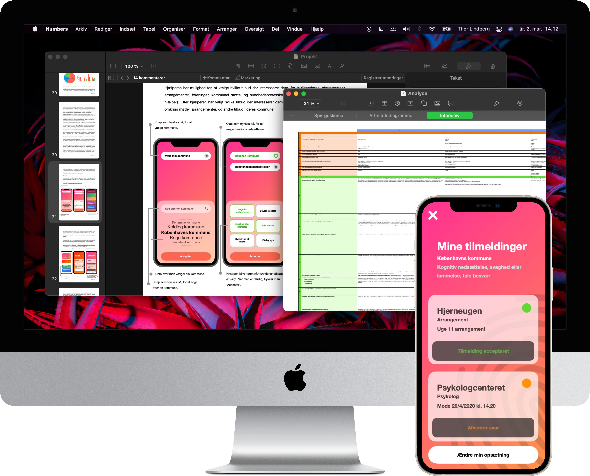
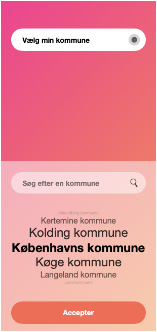
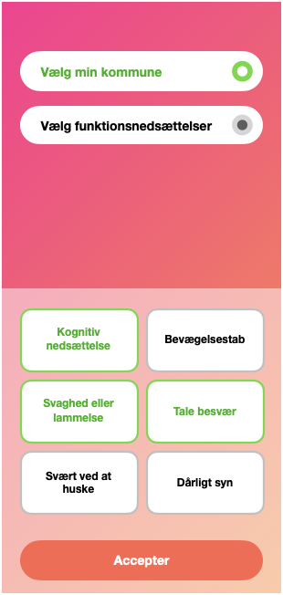
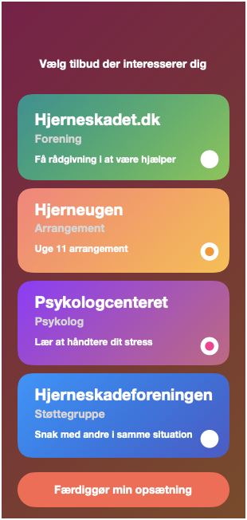
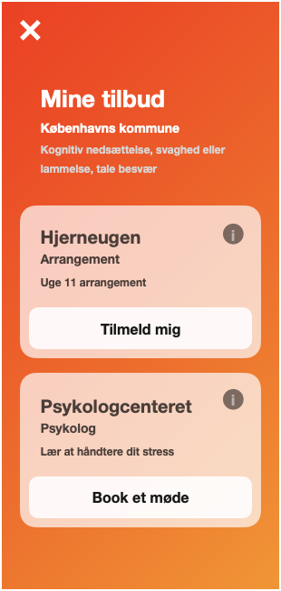
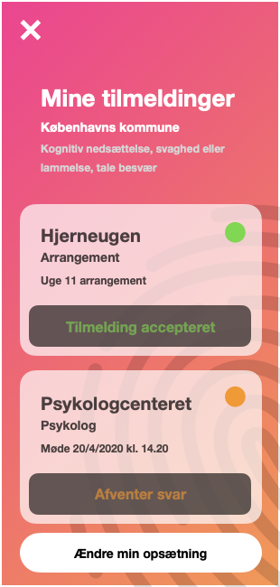

Abstract
Stroke is an acute interruption in the blood supply to the brain, caused either by brain hemorrhage or a blood-cloth in the brain. Hemorrhage is surgically treated by relieving the skull of blood, and stopping the bleeding, while blood-cloths are removed with a catheter. The larger challenge is treating the chronic impairments caused by stroke. Rehabilitating stroke victims is a complex process, as stroke causes varying physical and mental impairments.
The purpose of this Thesis is to identify which tools caretakers of stroke victims are lacking, and how their needs can be addressed through expanding the availability and awareness of tools. Providing caretakers with the necessary tools, enables caretakers to provide sufficient care for victims of stroke.
The data consists of survey results from 43 respondents, and interview transcriptions from 8 of those same respondents. The participants were invited through the utilization of social media groups for caretakers of stroke victims, on the website Facebook. Using the program Numbers, the survey results were turned into affinity diagrams. These diagrams were used to inform the nodes for coding transcriptions, and coding was done by utilizing the program NVivo. Citations from the transcripts were grouped by how they describe the needs and tools, identified in the affinity diagrams of the survey results.
The analysis was performed through plotting affinity diagrams as charts, and coding the interview transcriptions. Charts describing affinity diagrams, give an overview of the frequency of responses. Coded transcriptions provide an in-depth description of why and how caretakers are affected by stroke, and how they handle it.
The results indicate that caretakers could benefit, from an expansion of the availability and awareness of existing tools. These tools are provided to caretakers by both the Danish healthcare system, and by other caretakers, such as those in social media support groups and associations. The tools identified were: communication between caretakers, support from voluntary associations for caretakers, professional knowledge of impairments caused by stroke, access to psychological therapy, and coordination of the stroke victim’s treatment.
Application proposal





Citations
[1] Bladbjerg, E., Sandbæk, A. and Stallknecht, B. (2012). “Sygdomslære for ikke-klinikere”. København: Munksgaard.
[2] Brinkmann, S. and Tanggaard, L., 2015. Kvalitative Metoder. København: Hans Reitzel, pp.29-53.
[3] Christensen, J., 2019. Apopleksi (Slagtilfælde), Rehabilitering. [online] Sundhed.dk. Available at: https://www.sundhed.dk/borger/patienthaandbogen/hjerte-og-blodkar/sygdomme/apopleksi/apopleksi-rehabilitering/ [Accessed 10 April 2020].
[4] Christensen, J., Kristensen, J. and Kruuse, C. (2019). Apopleksi (slagtilfælde), genoptræning. [online] Sundhed.dk. Available at: https://www.sundhed.dk/borger/patienthaandbogen/hjerte-og-blodkar/sygdomme/apopleksi/apopleksi-genoptraening/ [Accessed 12 Feb. 2020].
[5] Christensen, J., Kristensen, J. and Kruuse, C. (2019). Behandling ved apopleksi (slagtilfælde). [online] Sundhed.dk. Available at: https://www.sundhed.dk/borger/patienthaandbogen/hjerte-og-blodkar/sygdomme/apopleksi/behandling-ved-apopleksi/ [Accessed 12 Feb. 2020].
[6] Editorial staff at UC Berkeley School of Public Health (2017). “How Stroke Affects the Brain”. https://www.healthandwellnessalerts.berkeley.edu/topics/hypertension-stroke/how-stroke-affects-the-brain/
[7] Eriksen, T., 2016. Sådan Foretager Man Et Litteraturstudie. [online] Scribbr. Available at: https://www.scribbr.dk/struktur-i-din-afhandling/saadan-foretager-man-et-litteraturstudie/ [Accessed 9 March 2020].
[8] Forlaget94.dk. n.d. Sociologisk Metode. [online] Available at: http://forlaget94.dk/cms/wp-content/uploads/F94-GTSIO-2011-K1-Prove.pdf?fbclid=IwAR0jQB3AYdUYh1IW4YHissFBo-8_RYAaV_8iNTYm6bKcPIvdMRML3ncjFl4 [Accessed 29 March 2020].
[9] Gaffney, G., 1999. Usability Techniques Series. [image] Available at: http://www.infodesign.com.au [Accessed 29 March 2020].
[10] Kaspersen, L., 2016. Kvalitative Metoder | Gyldendal - Den Store Danske. [online] Denstoredanske.dk. Available at: http://denstoredanske.dk/Samfund,_jura_og_politik/Sociologi/Sociologisk_metodologi/kvalitative_metoder [Accessed 29 March 2020].
[11] L. Evans, R., S. Bishop, D. and K. Haselkorn, J., 1991. Factors Predicting Satisfactory Home Care After Stroke. [online] Archives-pmr.org. Available at: https://www.archives-pmr.org/article/
[12] Larsen, L. (2010). Forløb: Blodprop i hjernen eller hjerneblødning. [online] Netdoktor.dk. Available at: https://netdoktor.dk/forlob/apopleksi.htm [Accessed 20 Feb. 2020].
[13] Metodeguiden.au.dk. n.d. Kvalitativ Metode. [online] Available at: https://metodeguiden.au.dk/kvalitativ-metode/ [Accessed 29 March 2020].
[14] Publishing, H., 2019. Ministroke: A Warning Sign Of A Major Problem - Harvard Health. [online] Harvard Health. Available at: https://www.health.harvard.edu/heart-health/ministroke-a-warning-sign-of-a-major-problem [Accessed 10 April 2020].
[15] Rezaei, A., 2015. Brain Tissue Mechanical Characterization And Determination Of Brain Response Under Confined Blasts Explosions. [online] Semanticscholar.org. Available at: https://www.semanticscholar.org/paper/Brain-tissue-mechanical-characterization-and-of-Rezaei/b0fffd9592207ff491a12b39c4163a1f34fa91be [Accessed 10 April 2020].
[16] Rigshospitalet.dk. (n.d.). Hjerneblødninger. [online] Available at: https://www.rigshospitalet.dk/afdelinger-og-klinikker/neuro/neurokirurgisk-klinik/undersoegelse-og-behandling/hovedtraumer/Sider/hjernebloedninger.aspx [Accessed 20 Feb. 2020].
[17] The News Room. 2012. Vidste Du Det? – Hjernen. [online] Available at: https://thenewsroom2w.wordpress.com/2012/12/20/vidste-du-det-hjernen/ [Accessed 10 April 2020].
[18] Williams, A. (1994). What Bothers Caregivers of Stroke Victims?. Journal of Neuroscience Nursing, [online] 26(3), pp.155-161. Available at: https://insights.ovid.com/crossref?an=01376517-199406000-00009.
[19] Wolfe, Charles (2000). “The impact of stroke”. https://academic.oup.com/bmb/article/56/2/275/303250
[20] Øhlenschlæger, B. and Riis, P., 2011. Ældre Og Apopleksi. Servicestyrelsen, p.13.